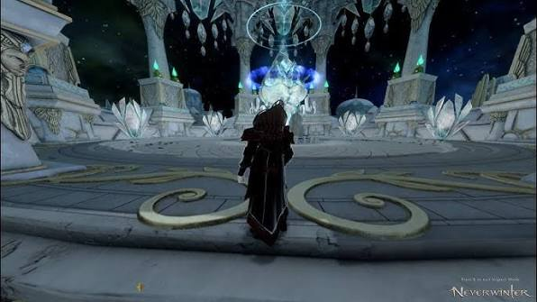

DUNGEON MECHANICS
IMPERIAL CITADEL
Break the generators. Read the mirrors. Survive the emperor's bullshit.

OVERVIEW
IMPERIAL CITADEL
Imperial Citadel has three major encounters built around priority adds, low-gravity mechanics, lethal mirror patterns and increasingly chaotic arena effects.
BOSS ONE
MONSTROUS MENAGERIE
- The main target is the Thoon Hulk.
- The Scorpion and Yuan-ti are also present, but should not be treated as the main damage targets initially.
- Keep the Yuan-ti away from the Thoon Hulk.
- If the Yuan-ti gets close, it can heal the Thoon Hulk.
- The healer or a control-capable DPS can keep the Yuan-ti separated from the main boss.
PRIORITY ADDS
EXPLODING SPIDERS
- Spiders periodically jump into the arena.
- Each spider has a countdown bar beneath its health.
- Kill the spider before the bar reaches zero.
- If the countdown finishes, the spider explodes and deals massive damage.
- Treat them as immediate priority targets.
KEY MECHANIC
GRAVITY GENERATORS
- Several Gravity Generators surround the arena.
- At least two generators must be reduced to zero health to activate Low Gravity.
- One destroyed generator is not enough.
- The generators slowly recover health over time.
- The Yuan-ti can rapidly heal nearby generators, another reason to keep it away.
SURVIVAL MECHANIC
FLOOR IS LAVA
- When the arena floor turns purple, remaining on the ground causes heavy damage over time.
- Make sure Low Gravity is active before this happens.
- Continuously jump while the floor remains dangerous.
- If Low Gravity is not active, players will not be able to jump high enough to survive.
- The Thoon Hulk gains very high damage resistance during this mechanic.
BOSS ONE
KILL ORDER
- Focus the Thoon Hulk first.
- Keep the Yuan-ti controlled and away from the Hulk.
- Kill exploding spiders whenever they appear.
- Maintain at least two depleted Gravity Generators.
- Once the Thoon Hulk dies, finish the Scorpion and Yuan-ti.
BOSS TWO
ZODAR
- The arena contains nine tiles and crystals around the outside.
- The central Astral Font deals damage over time and applies stacking debuffs.
- Do not remain in the centre for long.
- Too many stacks from the Font will stun and kill the player.
KEY MECHANIC
CRYSTAL BEAMS
- Crystals around the arena begin glowing before firing.
- Their beams cover straight lines across multiple tiles.
- Being caught in a beam can instantly kill non-tanks.
- Watch which crystals light up and move to the safe tile.
- The pattern rotates around the arena.
- Keep moving from one safe tile to the next as the crystals fire.
ZODAR
MIRROR PHASES
- Around 90% health, the first crystal pattern begins.
- Two safe tiles are normally available.
- Around 60%, three crystals fire at once and only one safe outer tile remains.
- The centre can be used briefly as an emergency route, but do not remain there.
- Around 30%, the two-safe-tile pattern returns faster.
- Around 15%, the sequence becomes significantly quicker.
TANK MECHANIC
ZODAR TANK BUSTER
- Zodar uses a multi-target heavy attack on the tank.
- Other players should stay away from the tank when it resolves.
- Tanks should keep awareness of the safe mirror tiles while positioning for the buster.
FINAL BURN
SUNFALL
- Near approximately 5% health, Zodar begins a heavy damage-over-time phase.
- Crystal mechanics remain active.
- The group must continue moving while healers sustain increasing incoming damage.
- Burn Zodar before the damage overwhelms the group.
FINAL BOSS
EMPEROR XELETH
- Emperor Xeleth combines timed debuffs, shields, adds, clones, crystal attacks and polarity mechanics.
- The longer the encounter lasts, the more dangerous the arena becomes.
SOFT ENRAGE
INSTABILITY
- Xeleth periodically applies a random negative condition to the group.
- Each new condition increases Instability.
- Possible effects include: black holes, reduced damage at range, fire pools under players, movement-based damage, movement-speed reduction and damage while moving.
- White Noise periodically damages the entire group.
- White Noise damage increases as Instability rises.
- This creates a soft timer: kill the boss before Instability becomes unmanageable.
GROUP DAMAGE
WHITE NOISE
- The centre of the arena begins glowing before White Noise.
- The effect then bursts outward and hits the whole group.
- Higher Instability means heavier damage.
- Healers should prepare mitigation and group healing.
BOSS PHASES
SHIELDS
- Xeleth shields at approximately 90%, 50% and 25% health.
- The shield lasts for a significant period.
- Do not waste burst damage into the shield.
- Use shield phases to clear adds and prepare for the next damage window.
CLONE PHASE
EMPEROR CLONES
- Between roughly 50% and 25% health, Xeleth can create several clones.
- The clones remain active for a short period and cannot be meaningfully damaged.
- Clones repeatedly cast large red cone attacks.
- Move out of the cones immediately.
- Use this phase to clear adds and survive until the real boss returns.
ADD CONTROL
ROYAL GUARDS
- Add waves appear at boss health thresholds and during some shield or clone phases.
- A healer-type add can appear around the 50% wave.
- Kill the healer first, otherwise it can rapidly restore the other adds.
- Clear adds primarily when Xeleth is shielded or unavailable.
POSITIONING
HOLY DONUT
- Xeleth creates an attack with a dangerous middle-distance zone.
- Players must either move close to the boss or far away.
- Standing at medium range when the attack resolves can kill you.
ARENA MECHANIC
CRYSTAL FIRE
- The centre periodically creates red telegraphed attacks.
- Afterward, crystals around the outside of the arena activate.
- Outer crystals fire toward the centre without a red ground telegraph.
- Watch which crystals glow before they fire.
- Position in the narrow safe areas near the outer pillars.
- The usual sequence is: centre attack first, outer crystal attack second.
TANK MECHANIC
PURPLE HAND
- Xeleth's hand glows purple before his heavy tank attack.
- The attack deals area damage around the tank.
- Tanks should move away from the group before it resolves.
- Everyone else should stay clear.
PAIR MECHANIC
POSITIVE & NEGATIVE CHARGES
- Paired players receive positive or negative symbols.
- Matching signs repel each other.
- Position close enough that the push does not throw either player into a danger zone.
- Opposite signs attract each other.
- Start far apart to prevent collision.
- Colliding applies a debuff.
QUICK REFERENCE
IMPERIAL CITADEL SURVIVAL NOTES
- Spider bar running out → KILL IT.
- Yuan-ti → keep away from Thoon Hulk and generators.
- Floor purple → Low Gravity active and keep jumping.
- Zodar crystals glow → move to safe tile.
- Centre tile → emergency use only.
- Zodar 5% → burn through Sunfall.
- Xeleth shield → stop wasting burst.
- Clones → dodge cones and wait.
- Healer add → kill first.
- Holy Donut → close or far, not middle.
- Centre fires → outer crystals are next.
- Purple hand → tank buster incoming.
- Same polarity → repel.
- Opposite polarity → attract.
- Instability climbing → stop fucking around and kill him.